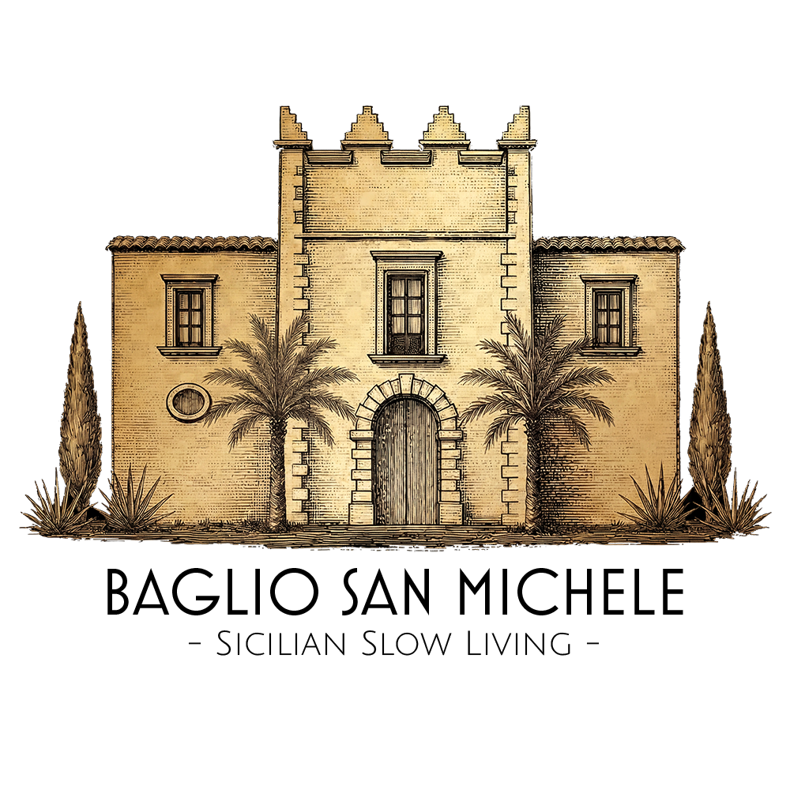

Una comunità intenzionale stabile nel cuore della Sicilia iblea
Non è solo un posto dove abitare. È una scelta di vita, di valori e di futuro per le proprie famiglie.
Un modello pensato per durare generazioni, non per generare plusvalenze veloci.
Famiglie che condividono valori, fede e desiderio di radicamento autentico.
Un equilibrio tra rispetto della tradizione siciliana e visione per il futuro delle nuove generazioni.

Famiglie che cercano un luogo stabile dove crescere i figli, condividere valori e costruire relazioni autentiche all’interno di una comunità intenzionale.
Scopri come entrare →
Un’opportunità di allocare capitale in beni reali all’interno di un modello anti-speculativo, trasparente e orientato al lungo periodo.
Scopri l’investimento →Il progetto prevede due fasi di sviluppo con diverse tipologie di alloggi.

14 unità abitative all’interno della masseria del XVI secolo.

Unità residenziali di nuova costruzione in pietra iblea.